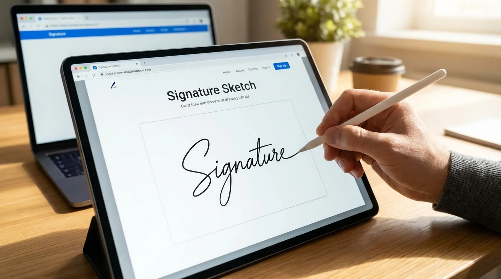

You need to sign a document. You do not have a printer. You do not have a scanner. You do not want to install an app. All you need is a browser and 30 seconds.
Drawing your signature online is the fastest way to create a reusable, professional-looking handwritten signature. This guide shows you exactly how to do it, which tools work best, and how to make your drawn signature look as natural as pen on paper.

Why Draw Your Signature Online?
There are three common ways to get a digital version of your signature:
- Scan a paper signature. Requires a printer, pen, scanner (or phone camera), and usually leaves a white background you need to remove.
- Type your name in a font. Fast, but looks typed. Not ideal when you want a personal, handwritten feel.
- Draw it directly online. Combines the authenticity of handwriting with the convenience of digital. No paper, no scanning, no background removal.
Option 3 is what most people actually want. You get a real handwritten signature, saved as a transparent PNG, ready to drop into any document.
How to Draw Your Signature Online (Step by Step)
Here is the fastest method using Signature Sketch:
- Open the tool. Go to signaturesketch.tech. No account needed.
- Select Draw mode. Click the "Draw" tab at the top of the canvas.
- Choose your ink color. Black is standard. Blue ink is preferred for legal and financial documents because it distinguishes originals from photocopies.
- Adjust stroke width. A thicker stroke (3-4px) looks more confident. A thinner stroke (1-2px) looks more elegant.
- Sign. Use your mouse, trackpad, or finger (on touchscreen). Sign naturally, do not try to be perfect.
- Download. Click "Download PNG." You get a transparent image with no background.
The entire process takes under a minute. The downloaded PNG can be reused unlimited times across all your documents.
💡 Pro Tip: Use Your Phone
For the most natural result, open Signature Sketch on your phone and sign with your finger. A touchscreen gives you the same fluid motion as signing on paper. Then download the PNG and send it to your computer, or insert it directly from your phone.
Drawing vs Typing: Which Looks Better?
Both methods produce a valid electronic signature. But they look and feel very different.
| Feature | Drawn Signature | Typed Signature |
|---|---|---|
| Appearance | Unique, personal, handwritten feel | Clean but generic, looks like a font |
| Authenticity | High — matches your real signature | Low — anyone can type the same name |
| Speed | 30 seconds (draw once, reuse forever) | 10 seconds (type and pick a font) |
| Best For | Contracts, legal docs, formal letters | Internal memos, casual approvals |
| Legal Validity | Yes (electronic signature) | Yes (electronic signature) |
For anything that matters — contracts, NDAs, client-facing documents — a drawn signature carries more weight. Not legally (both are equal), but in terms of perception and professionalism.
Best Devices for Drawing a Signature
The device you use affects how natural your signature looks. Here is a ranking from best to worst:
1. Tablet with Stylus (Best)
An iPad with Apple Pencil or any Android tablet with a stylus gives you pressure sensitivity and precision. The result is nearly indistinguishable from pen on paper. If you sign documents frequently, this is the gold standard.
2. Phone Touchscreen (Great)
Your finger on a phone screen is surprisingly effective. The small screen forces you to sign with natural wrist movements rather than awkward arm movements. Open Signature Sketch on your phone, sign, and download. Most people are happy with this result.
3. Laptop Trackpad (Good)
Modern trackpads (especially on MacBooks) are large enough to draw a decent signature. Use your index finger and sign in one fluid motion. It takes a few tries, but the result is solid.
4. Mouse (Acceptable)
A mouse is the hardest input device for drawing because it translates wrist movement differently than writing. Tips for better results with a mouse:
- Slow down. Do not rush.
- Use a slightly thicker stroke width to hide wobble.
- Sign with your whole arm, not just your wrist.
- Try 3-4 times and keep the best one.
7 Tips to Make Your Drawn Signature Look Natural
A common complaint: "My online signature looks shaky." Here is how to fix that:
- Sign fast, not slow. Real signatures are quick. Slow drawing creates wobbly lines. Commit to each stroke.
- Do not lift your finger/mouse too often. A real signature is usually 1-3 continuous strokes. Fewer lifts = more natural.
- Use a thicker stroke. Thin lines expose every tremor. A 3-4px stroke width hides imperfections and looks more confident.
- Practice on paper first. Sign your name on paper a few times to warm up your muscle memory, then replicate it on screen.
- Do not zoom in. Sign at normal size. Zooming in makes you focus on details that nobody will notice at actual document size.
- Accept imperfection. Real signatures are not perfect. A slightly messy signature looks more authentic than a carefully drawn one.
- Try multiple times. Draw 5 versions and pick the best. It takes 30 seconds each. The "undo" and "clear" buttons are your friends.
Where to Use Your Drawn Signature
Once you have your transparent PNG, you can insert it into virtually any document:
- Microsoft Word: Insert > Pictures > select your PNG. Full Word tutorial here.
- Google Docs: Insert > Image > Upload from computer. Full Google Docs tutorial here.
- PDFs: Use any free PDF reader's "Add Image" or "Fill & Sign" feature. Full PDF tutorial here.
- Emails: Add the image to your email signature in Gmail, Outlook, or Apple Mail.
- Canva, Figma, Photoshop: Drag and drop the PNG. The transparent background means it layers perfectly.
- Notion, Slides, Excel: Insert as image. Works everywhere images are supported.
Because the PNG has a transparent background, your signature sits cleanly on top of text, lines, and colored backgrounds without a white box.
Is a Drawn Online Signature Legally Valid?
Yes. A signature drawn online is a valid electronic signature under:
- United States: ESIGN Act (2000) and UETA
- European Union: eIDAS Regulation (Simple Electronic Signature)
- United Kingdom: Electronic Communications Act 2000
- Canada: PIPEDA and provincial electronic transaction laws
- Australia: Electronic Transactions Act 1999
The legal requirement is intent to sign, not the method used. Whether you draw it with a mouse, type it, or use a pen on paper, the signature is equally valid for most transactions.
Exceptions exist for wills, certain real estate transactions, and court orders in some jurisdictions. For everything else — contracts, NDAs, invoices, HR forms, lease agreements — a drawn electronic signature is fully enforceable.
Privacy and Security
Your signature is sensitive personal data. Here is what to look for in any online signature tool:
- Local processing: The tool should work entirely in your browser. No data should be sent to a server.
- No account required: If a tool forces you to create an account to draw a signature, your data is being stored somewhere.
- No watermarks: Watermarks mean the tool is trying to upsell you. Your signature should be clean.
- Open source: If the code is public, anyone can verify that no data is being collected.
Signature Sketch checks all four boxes. Everything runs in your browser. The source code is open source on GitHub. Nothing is uploaded, stored, or tracked.
Common Mistakes to Avoid
Saving as JPG instead of PNG
JPG does not support transparency. If you save your signature as a JPG, it will have a white background that covers text in your documents. Always use PNG format. Learn more about transparent signatures.
Making it too small
Draw your signature at a reasonable size. You can always scale it down in your document, but scaling up a tiny signature makes it pixelated and blurry.
Over-perfecting it
Spending 20 minutes trying to draw the "perfect" signature defeats the purpose. Real signatures are quick and slightly imperfect. That is what makes them look authentic.
Using a tool that uploads your data
Some online signature tools upload your drawing to their servers for "processing." There is no reason for this. A signature can be generated entirely in the browser. If a tool requires an internet connection to produce your signature image, your data is leaving your device.
Frequently Asked Questions
Can I draw my signature on a Chromebook?
Yes. Signature Sketch works in any modern browser including Chrome on Chromebooks. If your Chromebook has a touchscreen, you can draw with your finger. Otherwise, use the trackpad or a mouse.
How do I make my mouse-drawn signature look less shaky?
Use a thicker stroke width (3-4px), sign faster rather than slower, and try to complete your signature in as few strokes as possible. Drawing slowly amplifies every hand tremor. Speed and confidence produce smoother lines.
Can I change the color of my drawn signature?
Yes. Most online signature tools let you pick a color before drawing. Blue ink is recommended for formal documents. Black is the universal standard. Some tools also offer dark blue and other colors.
Is drawing better than typing for a signature?
For formal documents, yes. A drawn signature looks personal and authentic. A typed signature looks generic. Both are legally valid, but a drawn signature carries more perceived authority. For cursive-style typed signatures, the gap is smaller.
Do I need to draw my signature every time I sign a document?
No. Draw it once, download the PNG, and reuse it as many times as you want. Save the file somewhere accessible (Desktop, Google Drive, iCloud) so you can insert it into any document in seconds.
Draw Your Signature Now
Free. No sign-up. Works in your browser. Download a transparent PNG in seconds.
Open Signature Sketch